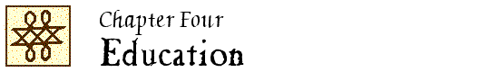

John Locke Chronology |
John Locke Manuscripts |
John Locke Resources |
John Locke Bibliography | ||

|
1653-1700 1701-1750 1751-1800 1801-1850 1851-1900 |
1901-1910 1911-1920 1921-1930 1931-1940 1941-1950 |
1951-1960 1961-1970 1971-1980 1981-1990 1991-2000 |
2001-2005 2006-2010 2011-2015 2016- |
 2011
2011
John Lockes Education : Erziehung im Dienst der Bildung / Heike Barakat. – Münster ; New York, NY : Waxamnn, 2011. – 249 p. – (Bildungswissenschaftliche Studien ; 4)
ISBN 978-3-8309-2467-8.
Unverified.
“Locke’s children” / Adriana Silvia Benzaquén. // IN: Journal of the history of childhood and youth. — 4 (2011):382-402.
LS 14:4
“Providential deism, divine reason, and Locke’s educational theory” / Clarence W. Joldersma. // IN: Journal of educational thought. – 45 (2011):113-125.
LS 12:6
“The matter of moral education : Locke, Newbery, and the didactic book-toy hybrid” / Heather Klemann. // IN: Eighteenth-century studies. – 44 (2010/11):223-244.
LS 11:7
“The educational revolution of John Locke and his Huguenot allies” / S.-J. Savonius-Wroth. // IN: Les Huguenots éducateurs dans l’espace européen à l’époque moderne / ouvrage édité par Geraldine Sheridan et Viviane Prest. – Paris : Champion, 2011. – (Vie des Huguenots ; 48). – pages 155-186.
LS 14:14
“The natural rights basis of Aristotelian education” / Christopher Vasillopulos. // IN: Studies in philosophy and education. – 30 (2011):19-36.
LS 14:16
2012
“Rousseau’s critique of Locke’s education for liberty” / Jonathan Marks. // IN: Journal of politics. – 74 (2012):694-706.
Abstract: IPSA 62:7232.
LS 13:9
“In the shadow of Émile : pedagogues, pediatricians, physical education, 1686-1762” / Danièle Tosato-Rigo. // IN: Studies in philosophy and education. – 31 (2012):449-463.
LS 12:9
2013
“Locke’s inverted quarantine : discipline, panopticism, and the making of the liberal subject.” – See entry in Chapter 7.
“Locke’s Thoughts on reputation” / Michelle E. Brady. // IN: Review of politics. – 75 (2013):335-356.
Abstract: IPSA 63:6409.
LS 13:5
New
Educar para a verdade e a virtude : a emergêngia de modernidade pedagógica no pensamento educional de John Locke / Rui Daniel da Costa Cunha ; prefácio e organizaçao de Maria da Conceição Azevedo. – Porto : Afrontamento, 2013. – 395 pages. – (Biblioteca de filosofia ; 37)
Unverified.
Gregoriou, Z. & Papastephanou, M.
“The utopianism of John Locke’s natural learning” / Zelia Gregoriou and Mariana Papastephanou. // IN: Ethics and education. – 8 (2013):18-30.
LS 13:7
New
“Projekt pedagogiki religioznawczej w perspektiywie myśli Oświecenia” / Juliusz Iwanicki. // IN: Przegląd religioznawczy. – 2013:nr 3:71-82.
Unverified.
The poetics of unremembered acts : reading, lyric, pedagogy / Brian McGrath. – Evanston, Illinois : Northwestern University Press, 2013.
See 1, “ ‘Cozen’d’ into knowledge : Locke” (p. 19-33)
LS 13:9
2014
“Notes on John Locke’s views on education” / Mihai Androne. // IN: Procedia. – 137 (2014):74-79.
LS 17:6
洛克, 斯宾塞教育名著导读 / 王凌皓主编 ; 李丽丽著. – 第1版. – 长春市 : 吉林文史出版社有限责任公司, 2014. – 178 pages. – (中外教育名著导读书系)
Luoke, Sibinsai jiao yu ming zhu dao du / Wang Linghao zhu bian ; Li Lili zhu. – Di 1 ban. – Changchun Shi : Jilin wen shi chu ban she you xian ze ren gong si, 2014. – 178 pages. – (Zhong wai jiao yu ming zhu dao du shu xi)
ISBN 978-7-547-21655-2.
Unverified.
Papastephanou, M. & Gregoriou, Z.
“Locke’s children? : Rousseau and the beans (beings?) of the colonial learner” / Mariana Papastephanou, Zelia Gregoriou. // IN: Studies in philosophy and education. – 33 (2014):463-480.
LS 14:12
New
“Johna Locke’a koncepcja wychowania moralnego” / Agnieszka Raniszewska-Wyrwa. // IN: Biuletyn historii wychowania. – 31 (2014):161-175.
Unverified.
New
“Komentarz do tekstu Františka Drtiny ‘Zasady wychowania według Locke’a w dwusetną rocznicę jego śmierci (28 października 1704)’ ” / Sebastian Taboł. // IN: Studia philosohica Wratislaviensia. – 10:fasc. 3 (2015):139-156.
Includes “Zasady wychowania według Locke’a w dwusetną rocznicę jego śmierci (28 października 1704)” / František Drtina ; tł. Sebastian Taboł (pages 145-156)
Unverified.
“Education et empirisme : les apories de John Locke” / Jean-Michel Vienne. // IN: Rassegna di pedagogia. – 72 (2014):83-97.
LS 17:35
2015
“Educare al governo di sé : Locke e il ruolo della religione nella formazione dell’uomo libero” / Alessia Affinito. // IN: Forum : supplement to Acta philosophica. – 1 (2015):59-73.
Available online: http://forum-phil.pusc.it/articoli/v01-a05 (viewed 7 February 2016)
LS 17:5
“Educational designs : the education and training of younger sons at the turn of the eighteenth century” / Adriana Benzaquén. // IN: Journal of family history. – 40 (2015):462-484.
LS 17:8
“A gentleman’s ‘moderate knowledge’ : mediocrity in John Locke’s Some thoughts concerning education” / Giuliana Di Biase. // IN: XVII-XVIII : revue de la Société d’Études anglo-américaines. – 72 (2015):57-80.
LS 17:11
“Liberal education in John Locke’s Some thoughts concerning education” / Giuliana Di Biase. // IN: Giornale critico della filosofia italiana. – 11 (2015):564-587.
New
“Elements of continuity and change in John Locke’s ‘Some thoughts concerning education’ ” / Fathi Neifar. // IN: Continuity and change : to be continued … / edited by Elżbieta Krawczyk-Neifar. – Katowice : Wyższa Szkoła Zarządzania Ochroną Pracy, 2015. – Pages 109-118.
Unverified.
New
“O zdrowiu, cnocie i edukacji : analiza założeń filozoficzno-ideowych w poglądach pedagogicznych Johna Locke’a” / Anna Piliszewska. // IN: Autorytet : mieć czy być? / pod redakcją Jana Zimnego. – Stalowa Wola : [Katedra Pedagogiki Katolickiej, Katolicki Uniwersytet Lubelski Jana Pawła II w Lublinie, Wydział Zamiejscowy Prawa i Nauk o Społeczeństwie], 2015. – pages 355-366.
Unverified.
2016
Grant, R. W. & Hertzberg, B. R.
“Locke on education” / Ruth W. Grant and Benjamin R. Hertzberg. // IN: A companion to Locke / edited by Matthew Stuart … (2016). – pages 448-465.
LS 17:15
New
“Wartości pedagogiczne poglądów teoriopoznawczych Johna Locke’a” / Marek Jurczyszyn. // IN: Kwartalnik pedagogiczny. – 61:nr 4 (2016):85-96.
Unverified.
“ ‘Contesting the empire of habit’ : habituation and liberty in Lockean education” / Rita Koganzon. // IN: American political science review. – 110 (2016):547-558.
LS 17:18
“Locke’s Some thoughts concerning education (1693) : fathers and conversational friendship” / J. K. Numao. // IN: Patriarchal moments : reading patriarchal texts / edited by Cesare Cuttica and Gaby Mahlberg. – London ; New York, NY : Bloomsbury Academic, 2016. – (Textual moments in the history of political thought). – pages 81-87.
LS 17:25
“Isaac Watts and the dimensions of child interiority” / Katherine Wakely-Mulroney. // IN: Journal for eighteenth-century studies. – 39 (2016):103-119.
LS 17:35
2017
New
“Filozofia wychowania Johna Locke’a (1632-1704) w dzisiejszych czasach” / Krzysztof Dziedzic, Olga Jabłonko. // IN: Gospodarka, rynek, edukacja. – 18:nr 3 (2017):36-40.
Unverified.
“Locke, education, and ‘disciplinary liberalism’ ” / Hina Nazar. // IN: The review of politics. – 79 (2017):215-238.
LS 17:24
2018
New
“Incentives and praise compared : the ethics of motivation” / Ruth W. Grant. // IN: International review of economics. – Posted online, 6 April 2018. – 12 pages.
New
“Locke and Rousseau on educating for freedom” / Hina Nazar ; commentator, Shelley Weinberg. – Paper presented at the 2018 John Locke Workshop, Mansfield College, Oxford, July 17, 2018.
Unverified.
New
“John Lockes gentry education im Hinblick auf sein Engagement für die Kolonisierung Nordamerikas” / Susanne Spieker. // IN: BIOS : Zeitschrift für Biographieforschung, Oral History und Lebenverlaufsanalysen. – 29 (2018):170-181.
Unverified.
|
1653-1700 1701-1750 1751-1800 1801-1850 1851-1900 |
1901-1910 1911-1920 1921-1930 1931-1940 1941-1950 |
1951-1960 1961-1970 1971-1980 1981-1990 1991-2000 |
2001-2005 2006-2010 2011-2015 2016- |